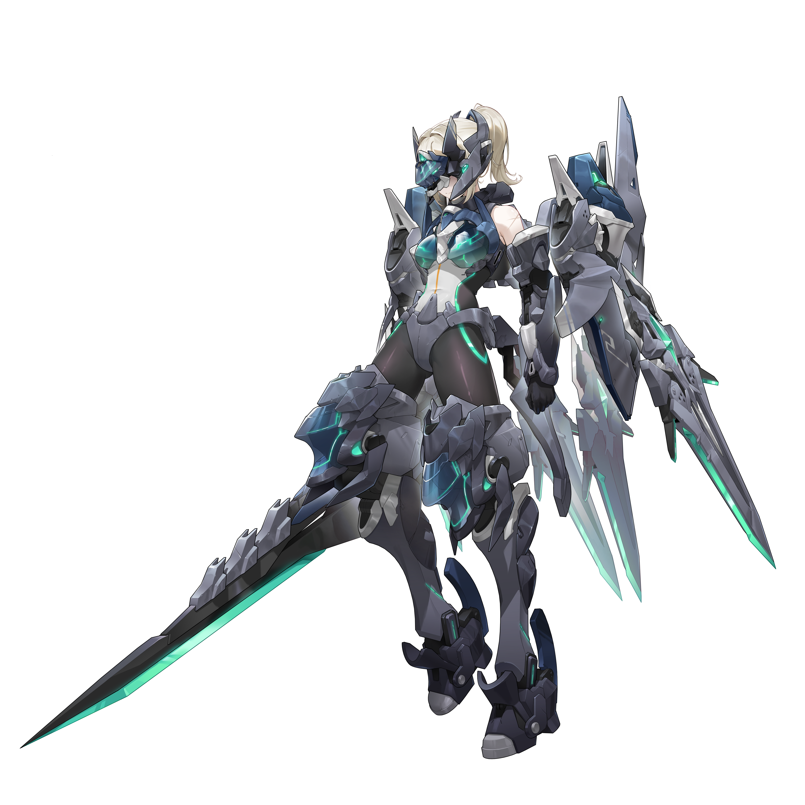

基本データ
- コスト
- 3.0
- 体力
- 未入力
- 赤ロック
- 30
- 動画
- 登録動画

Move Table
| 射撃 | 名称 | 弾数 | 威力 | 備考 |
|---|---|---|---|---|
| メイン射撃1 | 合成兵装・射撃 | 5 | 210/135 | 移動撃ちできるワイドビーム+ビット射撃 |
| 振り向き時メイン射撃1 | 357/135 | - | 2発同時+ビット射撃 | |
| メイン射撃2 | 合成兵装・射撃 | 4 | 429 | 移動撃ちできる照射 |
| 振り向き時メイン射撃2 | 477 | - | 足を止めて2連装照射 | |
| サブ射撃 | 合成兵装・合体/分離 | 1 | - | 武装性能を切り替える |
| 横サブ射撃 | ビームランチャー | 1 | 270 | 横移動しながら2連射 |
| 前/後サブ射撃 | 303 | - | 宙返りしながら同時射撃 | |
| 後格闘 | 合成兵装・切断 | 1 | 324(467)/256 | 足を止めてワイドビーム+ビット突撃。4凸で溜め撃ち可能 |
| 弾切れ後格闘 | 粒子バリア | - | - | 全方位バリア+カウンター |
| 格闘 | 名称 | 入力 | 弾数 | 威力 | 備考 |
|---|---|---|---|---|---|
| メイン格闘 | 格闘プログラム・メインI | NNN | - | 614 | 出し切りバウンド メイン射撃派生 |
| 格闘プログラム・エクステンドI | N→メ射 | - | - | 494 | 横薙ぎからスタン斬り抜け |
| NN→メ射 | - | - | 602 | ||
| NNN(1)→メ射 | - | - | 646 | ||
| NNN(2)→メ射 | - | - | 684 | 前格闘派生 | |
| 格闘プログラム・エクステンドII | N→前 | - | - | 645 | 拘束から強制ダウン |
| NN→前 | - | - | 719 | ||
| NNN(1)→前 | - | - | 751 | ||
| NNN(2)→前 | - | - | 775 | 後格闘派生 | |
| 格闘プログラム・エクステンドIII | N→後 | - | - | 831 | 3凸で解禁。キャンセル不可の高威力派生 |
| NN→後 | - | - | 869 | ||
| NNN(1)→後 | - | - | 886 | ||
| NNN(2)→後 | - | - | 896 | ||
| 横格闘 | 格闘プログラム・メインII | 横N | - | 551 | 2連撃x2段 メイン射撃派生 |
| 格闘プログラム・エクステンドI | 横(1)→メ射 | - | - | 494 | N格と同様 |
| 横→メ射 | - | - | 573 | ||
| 横N(1)→メ射 | - | - | 646 | 前格闘派生 | |
| 格闘プログラム・エクステンドII | 横(1)→前 | - | - | 645 | |
| 横→前 | - | - | 702 | ||
| 横N(1)→前 | - | - | 757 | 後格闘派生 | |
| 格闘プログラム・エクステンドIII | 横(1)→後 | - | - | 831 | |
| 横→後 | - | - | 864 | ||
| 横N(1)→後 | - | - | 900 | ||
| 前格闘 | 格闘プログラム・メインIII | 前 | - | 647 | バースト中Trans-Void付与。サブ格派生から出すと性能変化 |
| サブ格闘 | 格闘プログラム・ユニークI | サブ格 | (1) | 203 | 判定縮小斬り抜け。バースト中1回だけTrans-Void |
| 前サブ格闘 | 格闘プログラム・ユニークII | 前サブ格 | 1 | 671 | 全方位バリア格闘 |
| 横サブ格闘 | 格闘プログラム・ユニークIII | 横サブ格 | - | 310 | 回り込んで突く |
| 後サブ格闘 | 格闘プログラム・ユニークIV | 後サブ格 | - | 255 | ピョン格 |
| 各格闘サブ格派生 | Trans-Void Activate | 各格闘→サブ格 | - | - | 1凸で解禁。無敵状態で移動 |
| バーストアタック | 名称 | - | 威力 | ||
| バーストアタック | 格闘プログラム・ファイナルX | - | 1173///987 | 射撃が混ざる乱舞系 | |
| 横バーストアタック | 合成兵装・オーバーリミット斬撃 | - | 793///660 | レバー方向に薙ぎ払い | |
| 後バーストアタック | 合成兵装・オーバーリミット射撃 | - | 720///720 | 5凸で解禁。赤ロック無限狙撃 |